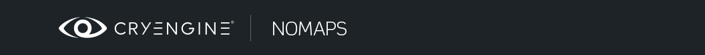
Обзор
Разделы
NoMaps — это отдельный инструмент, созданный Crytek для создания высококачественных карт нормалей касательного пространства для CRYENGINE. Раньше, когда люди пытались создать карты нормалей касательного пространства для нашего ENGINE, им приходилось использовать программное обеспечение, которое предполагало, как наш рендерер реализует касательное пространство. Проблема заключалась в том, что ни одно программное обеспечение не знало, как именно CRYENGINE отображает касательное пространство, поэтому карты нормалей никогда не были абсолютно точными или оставались совместимыми между ревизиями/версиями ENGINE. Теперь с NoMaps Crytek предлагает автономный инструмент, который создает карты нормалей касательного пространства непосредственно для CRYENGINE. Это программное обеспечение берет объект и соответствующую ему карту нормалей объектного пространства, а затем преобразует его в карту нормалей касательного пространства, которая идеально соответствует его сетке. Таким образом, NoMaps помогает получить высококачественные ресурсы для CRYENGINE, одновременно упрощая предыдущие рабочие процессы (требуется только карта нормалей объектного пространства).
Распространенные заблуждения
short введение в распространенные заблуждения о картах нормалей касательного пространства:
- Использование только одной группы сглаживания и отсутствие контуров управления/фасок в lowpoly создает градиенты на карте нормалей, и этого следует избегать любой ценой!
- Нет, поскольку long как касательное пространство рассчитывается одинаково как во время запекания, так и во время затенения, тогда градиенты в CRYENGINE будут выглядеть плоскими, и результат будет хорошим.
- Вы можете использовать одну группу сглаживания и не использовать циклы управления в качестве long, поскольку вы используете плагин касательного пространства для xNormal!
- Нет, это поможет вам только на 80-90% пути и в крайнем случае вы все равно получите артефакты. Плагины могут зайти так далеко, только если вы запекаете непосредственно в касательное пространство. Для получения идеальных результатов при запекании в объектном пространстве необходимо преобразовать результат в касательное пространство.
- Мне не нужны такие инструменты, как ручная плоскость, я могу использовать циклы управления, выборочно использовать жесткие/разделенные нормали, использовать одну группу сглаживания для одной оболочки UV.
- Это нормально, но все это увеличивает количество полигонов. Использование NoMaps позволит вам использовать меньше полигонов, меньше швов UV и даст больше контроля над тем, где должны проходить швы.
- Низкополигональные сетки только с одним SG и без фасок невозможно затенить, если вы не активируете пользовательские нормали.
- Нет, использование пользовательских нормалей необходимо только на этапе запекания. Внутриигровой *.cgf можно закрашивать как с использованием специальных нормалей, так и без них.
Подготовка
- Перейдите в xNormal и настройте параметры запекания для карты нормалей объектного пространства (зайдите в параметры карты нормалей и снимите флажок «Касательное пространство»). Ориентация (X+, Y+) не имеет значения.
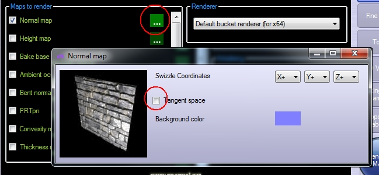
- Обязательно используйте *.tif в качестве типа выходного файла в xNormal и настройте свой плагин .tif для вывода глубины 16 бит:
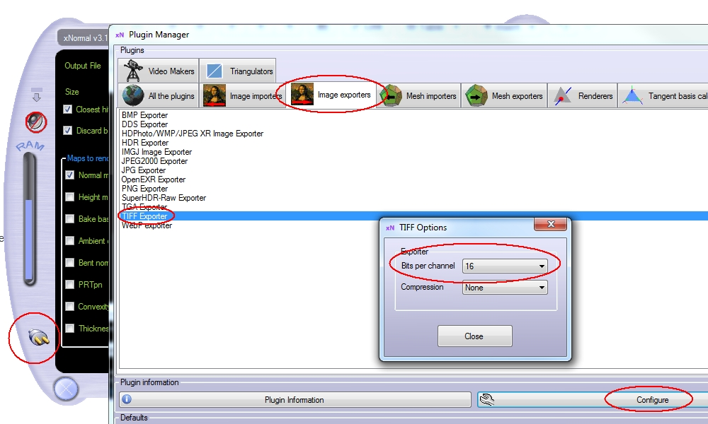
Запекаем карту нормалей. Рекомендуется использовать файлы *.sbm и модифицированные клетки, если ваша низкополигональная модель действительно упрощена.
Экспортируйте lowpoly как *.cgf, используя опцию «Пользовательские нормали». Обязательно отключите все модификаторы, которые изменяют нормали вершин (редактируют сетку, редактируют нормали и т. д.). Этот *.cgf предназначен только для запекания, в финальной игровой сетке можно отключить пользовательские нормали. То, что делают пользовательские нормали в этом случае, относится не только к нормалям вершин, скорее, RC пытается переориентировать касательные вершин, чтобы облегчить правильное затенение, и позволяет зеркально отображать UV, как согласно Миккельсену.NOTE: Если вы импортировали свою сетку из Maya в 3dsMax на каком-то этапе процесса ее создания, вам следует применить модификатор «Edit Poly» к вашему объекту, чтобы сбросить нормали вершин, а затем свернуть ее. Это необходимо сделать, поскольку у Maya нормали вершин отличаются от 3dsMax. Альтернативно, вы можете экспортировать свою сетку как *.obj из 3dsMax, затем повторно импортировать ее и использовать в дальнейшем.
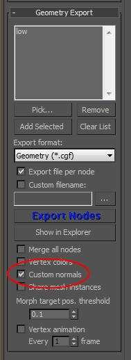
NoMaps Руководство по использованию
- Перетащите карту нормалей в окно текстур NoMaps или, альтернативно, добавьте ее в стек слоев, используя значок +:
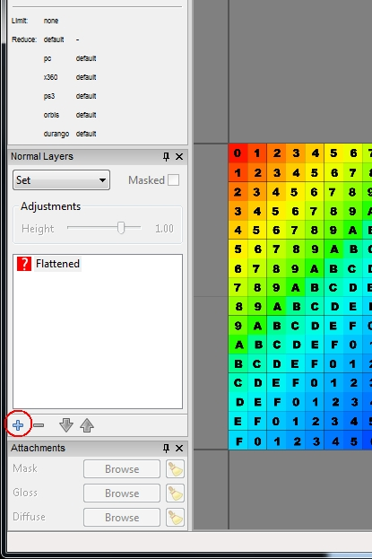
- Откроется диалоговое окно, предлагающее выбрать соответствующую сетку *.cgf. Выберите его и нажмите OK. В случае отмены вы также можете перетащить файл *.cgf в вид модели или загрузить его вручную с помощью кнопки «Обзор» (внизу справа).
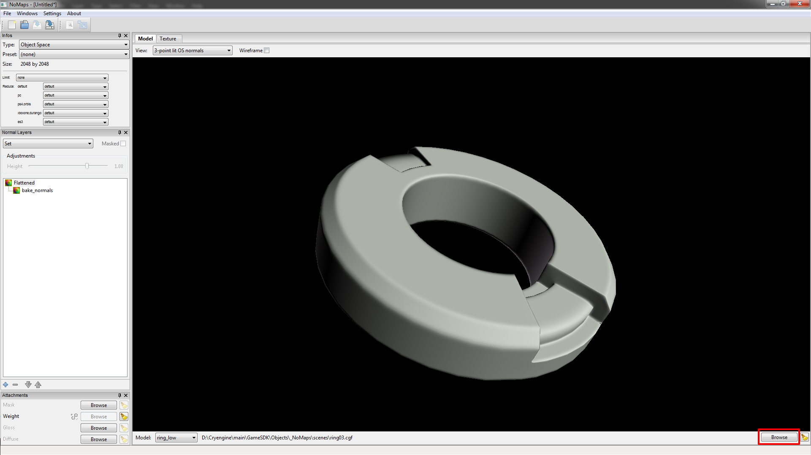
- NoMaps автоматически переориентирует карту нормалей объектного пространства в соответствии с вашим *.cgf. Это поведение по умолчанию, которое можно найти в «настройках». Если этот параметр отключен, вам нужно будет вручную выбрать параметр «Изменить ориентацию OSN в соответствии с CGF» в представлении слоев:
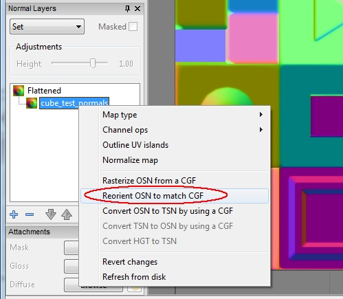
- Выберите опцию «Преобразовать OSN в TSN с помощью CGF», чтобы преобразовать обычную карту:
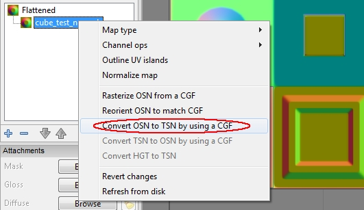
- Проверьте затенение карты на сетке, выбрав режим просмотра «3 точечные освещенные TS нормали» в представлении модели:
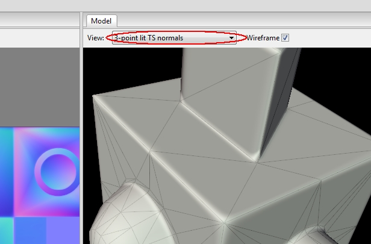
- Чтобы сохранить карту, выберите «Файл» -> «Сохранить как...» и измените тип файла на *.tif.
- Текстура будет сохранена как CryTIF с использованием обычных настроек CryTIF, указанных в крайней левой панели окна. Это настройки качества и уменьшения размера, которые вы знаете из плагина Photoshop:
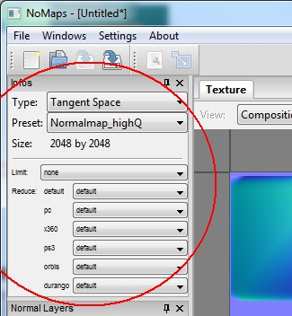
Вам придется вручную добавить правильный суффикс, иначе CRYENGINE не будет правильно интерпретировать ваши файлы. Итак, если вы хотите сохранить обычную карту нормалей, добавьте к имени файла суффикс _ddn.
Если вы хотите сохранить карты нормалей с картой сглаживания в альфа-канале, добавьте к имени файла суффикс _ddna. Вы также можете добавить карту плавности в NoMaps, выполнив следующий шаг: - Чтобы добавить карты сглаживания к вашей карте нормалей, нажмите кнопку «Обзор» для «Глянец» и укажите отдельную карту сглаживания:
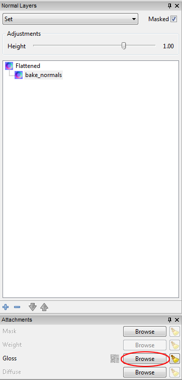
- Затем измените пресет текстуры в левом верхнем углу на этот параметр:
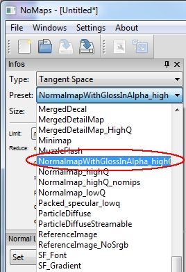
Наконец, сохраните текстуру, выбрав «Файл» -> «Сохранить как», выберите *.tif в качестве типа файла и добавьте суффикс _ddna к имени файла. - Наконец, посмотрите на *.cgf плюс текстуру в CRYENGINE и поразитесь результатам!
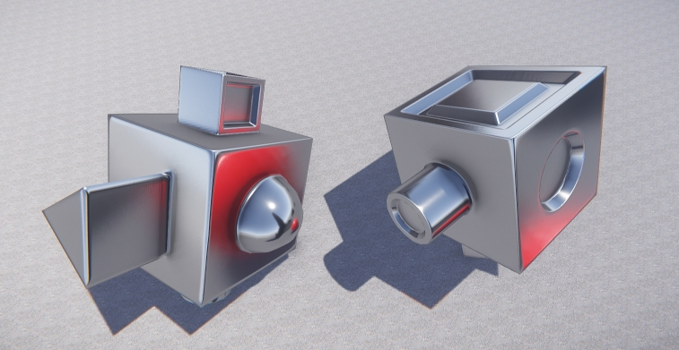
Lowpoly имеет только одну группу сглаживания и не имеет фасок (кроме закругленных краев - цилиндра и сферы).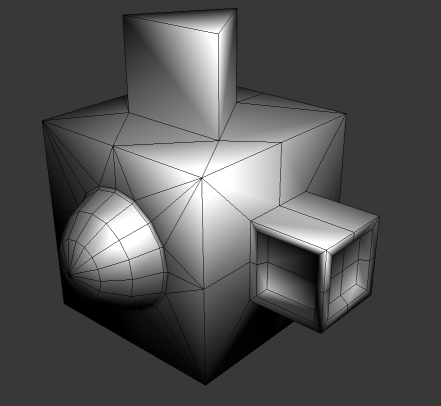
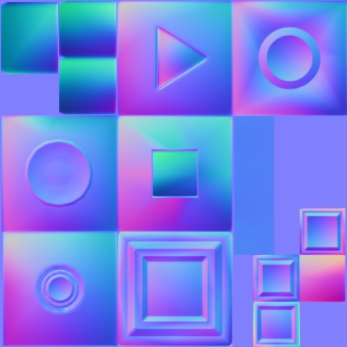